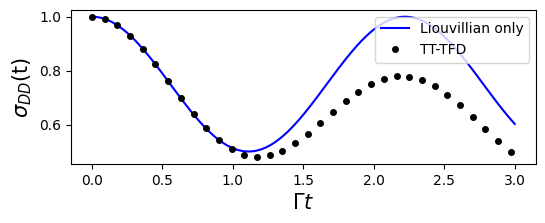
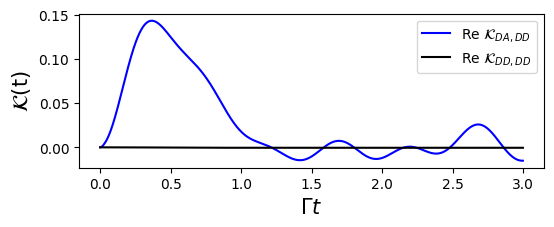

GQME for Spin-Boson model
This documentation describes how to simulate the dynamics of a spin-boson system using the generalized quantum master equation (GQME). This simulation also includes comparison plots to the numerically exact results obtained via tensor-train thermo-field dyanmics (TT-TFD).
The following modules will be used throughout the documentation:
import numpy as np
import time
import matplotlib.pyplot as plt
import qflux.GQME.params as pa
import qflux.GQME.readwrite as wr
Spin Boson Model Hamiltonian
The total Hamiltonian for the spin-boson model can be written as:
where \(\lvert D \rangle\) and \(\lvert A \rangle\) are the electronic donor state and acceptor state, respectively. \(\hat{\sigma}_z = \lvert D \rangle \langle D \rvert - \lvert A \rangle \langle A \rvert\), \(\hat{\sigma}_x = \lvert D \rangle \langle A \rvert + \lvert A \rangle \langle D \rvert\), \(2\epsilon\) is the reaction energy and \(\Gamma = V_{DA}\) is the electronic coupling between the donor and acceptor states. More details about the model can be found in What_is_TTFD.
The initial state is assumed to be of the form
With
and
By treating all nuclear degrees of freedom as the environment, the GQME for the spin-boson model can be written as follows:
Here, \(\hat{\sigma}(t)\) denotes the reduced density operator, which only includes the system degrees of freedom and is a \(2×2\) matrix.
To propagate the GQME, two quantities are required: the projected Liouvillian \(\langle {\cal L} \rangle_n^0\) and the memory kernel \(\mathcal{K}(t)\). Their computation is described below.
The projected Liouvillian
When the memory kernel is absent, the system dynamics are governed solely by the projected Liouvillian \(\langle {\cal L} \rangle_n^0\). Therefore, \(\langle {\cal L} \rangle_n^0\) represents the unitary dynamics of the isolated system without environmental effects.
The pure system Hamiltonian is given by \(H_S = \epsilon \hat{\sigma}_z + \Gamma \hat{\sigma}_x\), and \(\langle {\cal L} \rangle_n^0\) is defined through its action on an arbitrary electronic operator \(\hat{A}\):
The DynamicsGQME class in the qflux.GQME module provides methods for performing GQME calculations. The following code snippet shows how to initialize a DynamicsGQME object and define the initial reduced density operator and \(H_S\).
Then the method DynamicsGQME.prop_puresystem() allows for time evolution of the isolated system:
from qflux.GQME.dynamics_GQME import DynamicsGQME
import scipy.linalg as LA
#============setup the Hamiltonian and initial state for Spin-Boson Model
Hsys = pa.EPSILON*pa.Z + pa.GAMMA_DA*pa.X
rho0 = np.zeros((pa.DOF_E,pa.DOF_E),dtype=np.complex128)
rho0[0,0] = 1.0
#Create the Spin-Boson model (SBM)
SBM = DynamicsGQME(pa.DOF_E,Hsys,rho0)
SBM.setup_timestep(pa.DT, pa.TIME_STEPS)
#=========== Propagate the density matrix under the pure system Liouvillian
sigma_liou = SBM.prop_puresystem()
The results are shown in the figure below, along with the numerically exact TT-TFD results for comparison. As expected, the evolution of the isolated system exhibits no decay and no energy dissipation.

The Memory Kernel
According to What_is_GQME, the memory kernel can be obtained through the projection-free inputs (PFIs) \(\mathcal{F}(t)\) and \(\dot{\mathcal{F}}(t)\):
with \(\mathcal{F}(t) = i\dot{\mathcal{G}}(t)\) is the time-derivative of the propagator \(\mathcal{G}(t)\).
The propagator is a super-operator with the matrix element \(\mathcal{G}_{jk,lm}(t)\) (\(j, k, l, m \in \{D, A\}\)) can be calculated by starting from initial state \(|l⟩⟨m| ⊗ \hat{\rho}_n(0)\), measure the \(\sigma_{jk}(t)\) at time \(t\).
Here, we compute the propagator using the Tensor-Train Thermo-Field Dynamics (TT-TFD) approach, which in our qflux.GQME implementation is integrated into the cal_propagator_tttfd() method of the DynamicsGQME class.
# Compute the full system propagator using TT-TFD
timeVec, Gt = SBM.cal_propagator_tttfd()
print('End of calculate propagator')
# Save the computed propagator for future use
wr.output_superoper_array(timeVec, Gt, "qflux/data/GQME_Example/U_Output/U_")
Because this step can be computationally costly, the results are precomputed and saved. Alternatively, one can directly load the propagator data and set it in the DynamicsGQME class.
# Load precomputed propagator from file
timeVec, Gt = wr.read_superoper_array(pa.TIME_STEPS, "qflux/data/GQME_Example/U_Output/U_")
# Set the propagator in the SBM object for later use
SBM.setup_propagator(Gt)
Once the propagator \({\cal G}(t)\) is calculated, the memory kernel \({\cal K}(t)\) can be obtained by solving the above Volterra integral equation. In qflux, this equation is solved using an iterative algorithm, which has been integrated into the get_memory_kernel method of the DynamicsGQME class.

Propagating System Dynamics using GQME
With both the projected Liouvillian and the memory kernel available, Eq. (1) can be directly solved. The solve_gqme method in the DynamicsGQME class employs the fourth-order Runge-Kutta (RK4) method to solve the GQME. By providing the memory kernel and specifying a cutoff memory time, the solve_gqme method directly integrates the GQME and returns the reduced density operator \(\hat{\sigma}(t)\).
We visualize the simulations by plotting the observable \(\sigma(t)\). The comparison between the GQME and exact results obtained via TT-TFD offers a benchmark for accuracy.
## Plotting Results
#=========== Plot the 0th state population from both methods
plt.figure(figsize=(6,2))
plt.plot(timeVec, sigma[:, 0].real, 'b-', label='GQME')
plt.plot(timeVec, sigma_tt_tfd[:, 0].real, 'ko', markersize=4, markevery=15, label='benchmark_TT-TFD')
plt.xlabel('', fontsize=15)
plt.ylabel(r'$\sigma_{00}(t)$', fontsize=15)
plt.legend()
Summary
This example demonstrates a modular simulation of an open quantum system using the Generalized Quantum Master Equation (GQME) framework:
- The spin-boson model is used as an illustrative example, and its corresponding GQME is presented.
- A numerically exact approach based on Tensor-Train Thermo-Field Dynamics (TT-TFD) is provided to compute the memory kernel.
- The GQME is explicitly solved and benchmarked against exact TT-TFD calculations.
The combination of TT-TFD for accurate short-time dynamics and the GQME for efficient long-time propagation offers a powerful framework for studying open quantum systems with realistic environmental couplings.